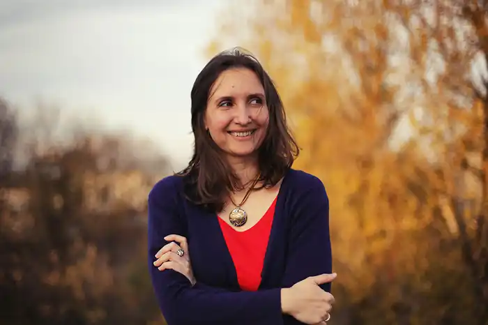
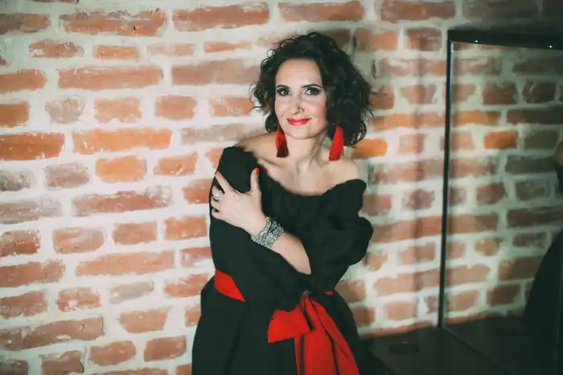
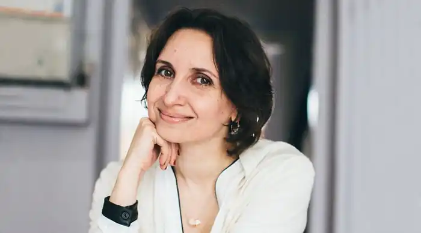
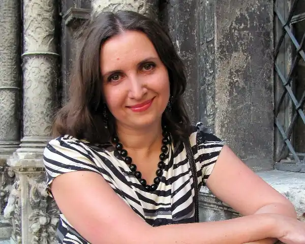
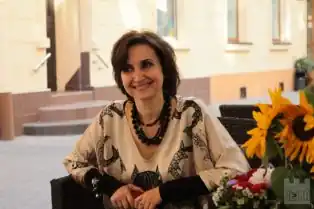
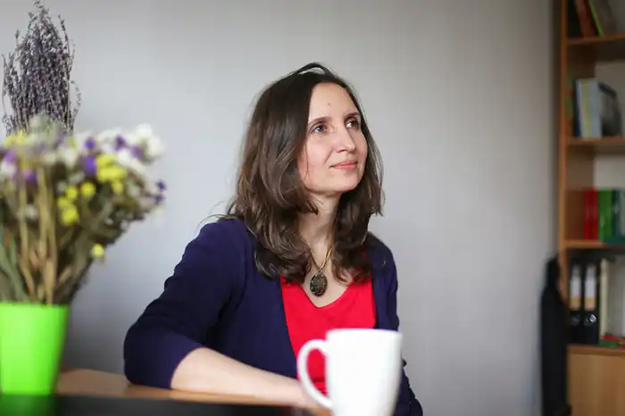

Савка Мар’яна Орестівна народилася 21 лютого 1973, м. Копичинці, Тернопільської області — українська поетеса, дитяча письменниця, літературознавець, публіцист, головний редактор і співзасновник "Видавництва Старого Лева".
У юності займалася співом і театром. Закінчила у Львові університет — українську філологію. У студентські роки належала до жіночого літературного угруповання ММЮННА ТУГА (за першими літерами імен: Мар’яна Савка, Маріанна Кіяновська, Юлія Міщенко, Наталка Сняданко, Наталя Томків і Анна Середа; ТУГА — "Товариство усамітнених графоманок").
Автор поетичних збірок "Оголені русла" (1995), "Малюнки на камені" (1998), "Гірка мандрагора" (2002; книга стала лауреатом ІХ Форуму видавців у Львові), "Кохання і війна" — у співавторстві зМаріанною Кіяновською (2002), "Квіти цмину" (2006), "Бостон-джаз" (2008), "Тінь Риби" (2010) монографічного дослідження української еміграційної преси на теренах Чехословаччини та кількох книжок для дітей. Поезія друкувалася в таких літературних журналах та альманахах: "Сучасність" (Київ), "Світовид" (Київ — Нью-Йорк), "Кур’єр Кривбасу" (Кривий Ріг), "Четвер" (Івано-Франківськ; Львів), "Плерома" (Івано-Франківськ), "Nemunas" (Вільнюс), "Королівський ліс" (Львів), "The Ukrainian Quarterly" (New York) та ін. Присутня в кількох поетичних антологіях, зокрема в антології одинадцяти поеток "Ми і Вона" та антології "Метаморфози. Десять найкращих українських поетів останніх десятих років". Поезія М. Савки перекладена польською, англійською, білоруською, російською, литовською мовами. Член АУП і НСПУ. Лауреат Міжнародної журналістської премії ім. Василя Стуса за книги поезій (2003).